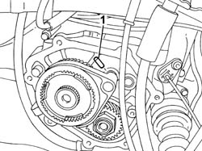
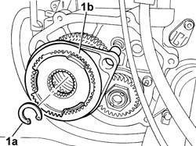
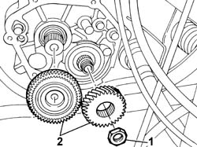

2110B40 5TH SPEED GEARS OF MANUAL GEARBOX WITH DIFFERENTIAL - R + R ON VEHICLE
- Path
- Procedures > 21 GEARBOX UNIT > 2110 MANUAL GEARBOX WITH DIFFERENTIAL > 2110B MANUAL GEARBOX WITH DIFFERENTIAL GEARS AND SYNCHRONISERS > 2110B40 5TH SPEED GEARS OF MANUAL GEARBOX WITH DIFFERENTIAL - R + R ON VEHICLE
- Kind
- repair procedure (removal / refitting; the operation number is the code)
- Applies to
- all engines; all production periods
- Interactive page
- https://sloeber94.github.io/elrnDB-fDct/en/#/244001026
Applies to: all engines; all production periods
 Removing
Removing
 Refitting
Refitting- Position the vehicle on the lift.
Op. 7055B54 UNDER-ENGINE GUARD - R R
Op. 2110C30 GEARBOX REAR COVER - R + R.
- Engage any gear except for 5th speed.
1. Remove the selector fork fastening pin.

Applies to: all engines; all production periods
1. Remove the circlip (1a) and remove the selector fork (1b).

Applies to: all engines; all production periods
1. Remove the staking and undo the nut fixing the 5th speed driven gear.
2. Remove the 5th speed driven and drive gears.

Applies to: all engines; all production periods
Refitting
Removing- Position the 5th speed driven and drive gears to engage 5th speed.
- Tighten and stake the nut fixing the 5th speed driven gear.
 | Value - daNm | Fastening | Component | Ø |
|---|---|---|---|---|
. | 17 | Nut | GEARS | - |
- Remove the drive gear and refit it together with the selector fork.
- Lock the drive gear using the special fastening spring.
- Fit the selector fork fastening pin.
Op. 0010T40 MANUAL GEARBOX OIL CHECK LEVEL AND TOP UP IF NECESSARY
Op. 7055B54 UNDER-ENGINE GUARD - R R
- Remove the vehicle from the lift.